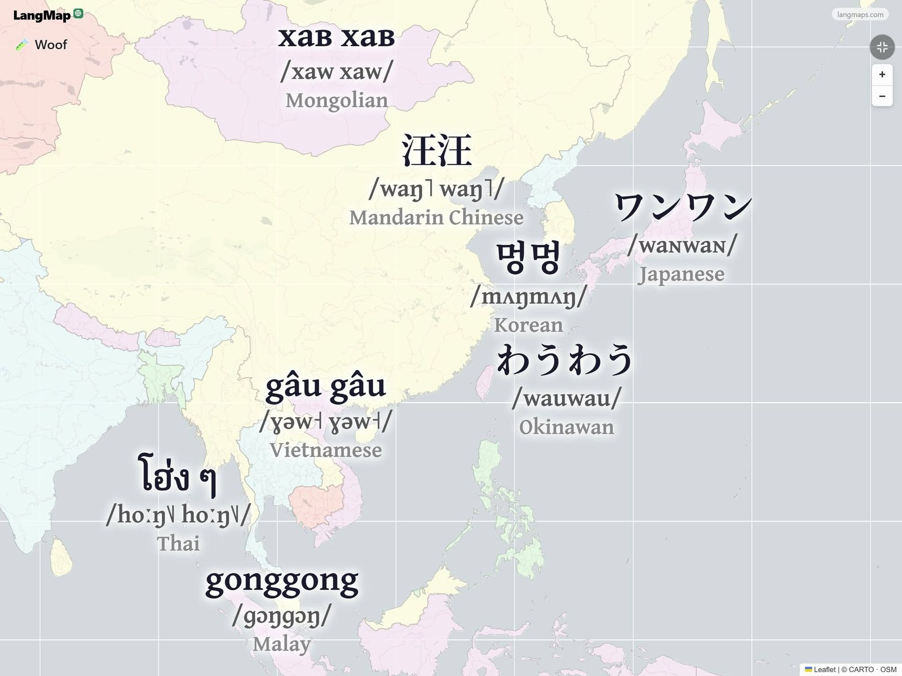
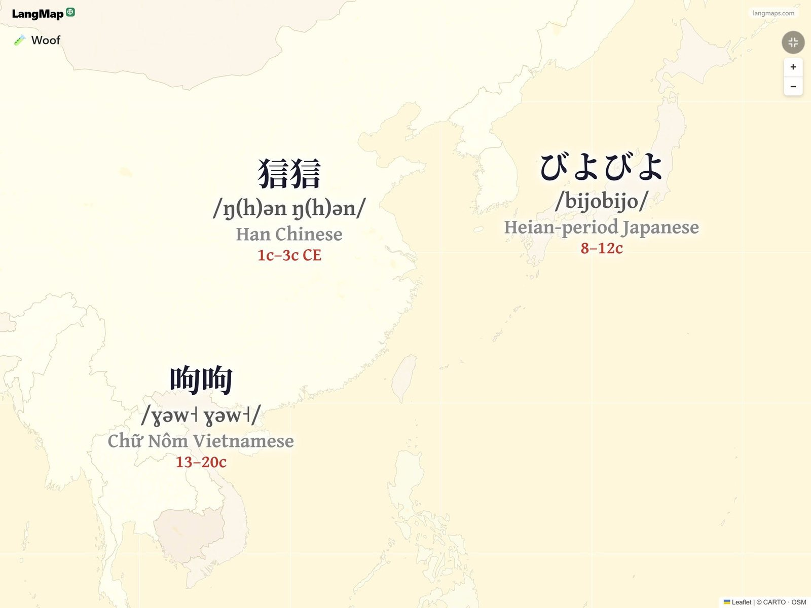

Sinosphere · · revised · Facebook post
Dogs Do Not "Say" the Same Thing in Every Language
- Dogs do not "say" the same thing in every language.
- Even within the same language, the way people write a bark can change over time.
- Japanese wan-wan is surprisingly recent; a thousand years ago, a Japanese dog sounded more like biyo.

Contents
One bark, many spellings
Today, dogs around East Asia sound very different on paper:
Japanese: ワンワン (wan-wan)
Mandarin: 汪汪 (wāng-wāng)
Korean: 멍멍 (meong-meong)
Vietnamese: gâu gâu
English: woof or bow-wow
The map goes further. Okinawan dogs say わうわう (wau-wau), Mongolian dogs хав хав, Thai dogs โฮ่ง ๆ (hong hong), and Malay dogs gonggong.
Of course, the dogs themselves are not speaking different languages.
People are fitting roughly the same animal sound into the sound system and conventions of their own language. A bark has no real consonants, so each language squeezes it into the consonants it owns: a w in Japanese and Mandarin, an m in Korean, a g in Vietnamese, a breathy h in Thai.
Nearly everybody agrees on one thing: say it twice. Thai even has a special sign, ๆ, that tells you to repeat the word.
And those conventions can change.
Japan: before wan-wan

Go back about a thousand years in Japan.
In the Heian-period Ōkagami (大鏡), a dog's bark is written ひよ hiyo.
That looks nothing like wan-wan.
But early Japanese manuscripts often omitted the marks used to distinguish voiced sounds, so it is generally interpreted as something closer to びよ biyo. The Word Map gives the Heian-period bark as びよびよ biyo-biyo.
Later texts also have forms such as byō.
Biyo and byō survived well into the Edo period, while wan-wan gradually appeared and eventually became the familiar form used today.
China: before wāng-wāng
China gives us an even older example.
Modern Mandarin uses 汪汪 wāng-wāng.
And 汪汪 itself is not new. It was already used for barking in texts from centuries ago.
But Classical Chinese also had 狺狺 yín-yín.
The word specifically represented the sound of dogs barking.
It appears in the Chuci (楚辭), in "Nine Changes" (九辯):
猛犬狺狺而迎吠
"Fierce dogs came forward barking yín-yín."
The Word Map places 狺狺 in Han-period Chinese, roughly the 1st to 3rd centuries CE, and reconstructs it with an initial ŋ-, a sound modern Mandarin no longer has at the start of a word.
Korea and Vietnam
So if we move backwards through time:
Modern Japanese: ワンワン wan-wan
Heian and later Japanese: びよ biyo / びょう byō
Modern Mandarin: 汪汪 wāng-wāng
Classical Chinese: 狺狺 yín-yín
What about Korea and Vietnam?
Modern Korean has 멍멍 meong-meong, and Vietnamese has gâu gâu.
When this was first posted, I had not found a securely attested historical dog-bark expression in older Korean or Vietnamese texts comparable to Japanese biyo or Classical Chinese 狺狺, and asked whether anyone knew an old Korean example, or a Chữ Nôm text that writes the sound of a barking dog.
Thanks to Phùng Đức Bình, that Chữ Nôm gap has now been filled. A Nôm dictionary writes gâu with 呴, a character built from 口 "mouth" + 句, so the bark becomes 呴呴 gâu gâu. The Word Map now shows it for Chữ Nôm Vietnamese.
The Korean gap is still open. If anyone knows an old Korean example, I would love to see it.
No correct answer
English has its own history too. Shakespeare spelled the bark his own way in The Tempest, where the watch-dogs go bowgh wawgh.
The interesting part is not which language hears the dog "correctly."
There may be no correct answer.
Onomatopoeia imitates sound, but it is still shaped by language.
And language changes.